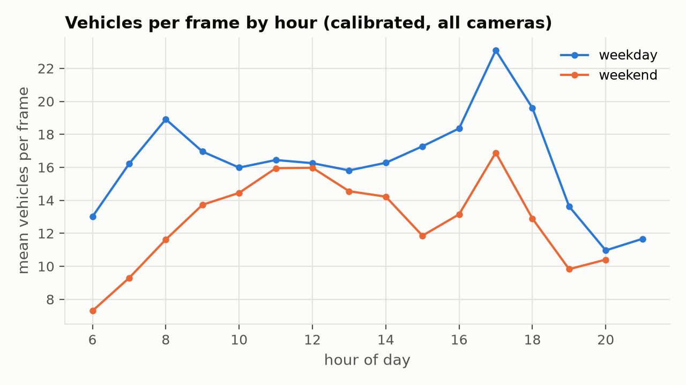
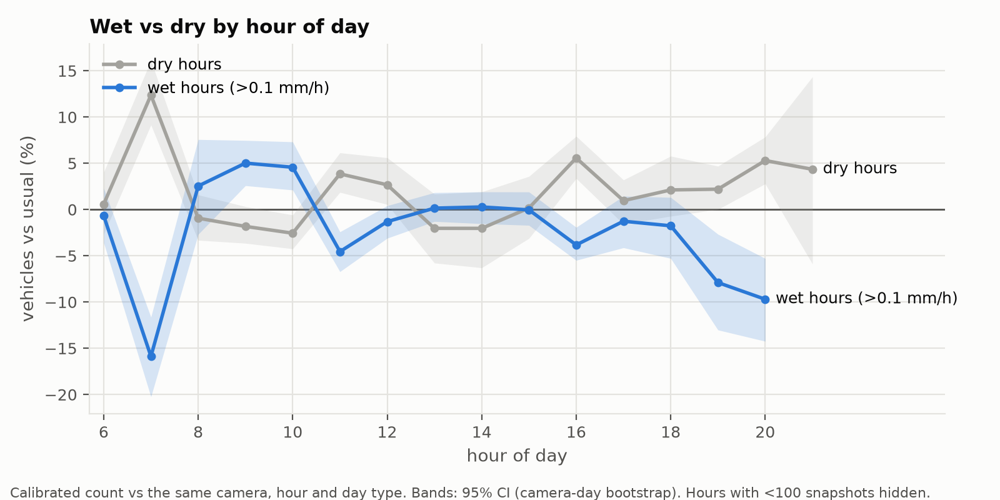

2110403 DSDE · Final project 2026/1
Does rain make Bangkok roads look more congested?
A one-week study of 61,143 CCTV snapshots from 100 BMA traffic cameras
A one-week study of 61,143 CCTV snapshots from 100 BMA traffic cameras
cartruckmotorcycle Boxes shown at confidence ≥ 0.25 for readability; counting uses 0.05.


Weekday evening peak at 17:00 (~23 vehicles per frame), morning peak at 08:00. Weekends are lower and flatter.

Motorcycles are under-detected (small, often hidden), which is why calibration is done per class.



Wet and dry hours track each other until 19–20 h, where wet hours fall to about −10%.

Heavy rain stays +2.5 to +4.9. Dropping Mon 31 Aug flips wet evenings from −7.1 to +1.6.